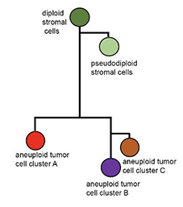
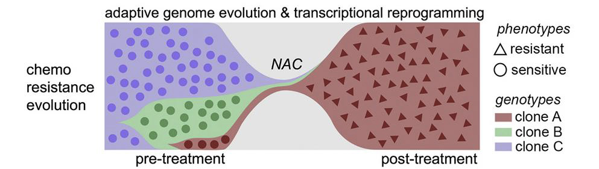
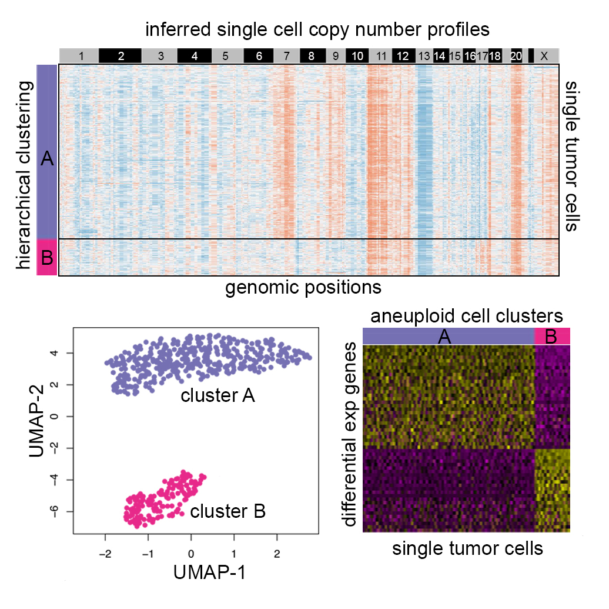

Houston Methodist Research Institute
GAO LAB
Translate Human Genome Cell by Cell
The Gao Lab reserach is focused on tracing tumor evolution and therapeutic resistance in human cancer patients using single cell sequencing technologies and computational methodologies. Dr. Gao has studied the punctuated copy number evolution in triple-negative breast cancer using single cell DNA sequencing and statistical methods (Nature Genetics, 2016). Her finding has challenged the paradigm of sequential gradualism of tumor evolution, suggesting that tumor cells may be pre-deterministic to be metastatic or resistant at the early stage of their development. She also delineated chemo-resistance evolution using integrative single cell multi-omics methods (Cell, 2018) and defined a model of chemoresistance evolution in which two modes of evolution (adaptive and acquired) were operating to establish the resistant tumor mass. Her current research interest is to understand the ecological system in tumor microenvironment and their roles in tumor evolution/resistance evolution using single cell genomics in combination with spatial transcriptomics and imaging approaches.
The Gao Lab is devloping novel approaches to delineate the development trajectories of normal cells in neurodegenerative and cardiovascular diseases.
The Gao Lab is also working on development of new computational methods to analyze high throughput multi-layers of single cell omics data to translate human genome data into clinical applications.
Research Areas
Evolution of Disease

The Gao Lab applies high throughput single cell sequencing technologies and computational methods to delineate evolutionary dynamics of tumor cell subpopulations in both early lesions and late stage metastases to identify the driving forces of tumorigenesis.
This approach can also be used to elucidate subsets of cells involved in the progression of neurological and cardiovascular diseases.
Dissection of Therapeutic Resistance

The pre-existing resistant genotypes can only activate a small fraction of resistance genes. The Gao Lab investigates the roles of Genotype-Phenotype Interplay in treatment resistance evolution by integrating multi-layers of single cell sequencing data and spatial imaging data to delineate spatial and temporal dynamics of tumor cells and their ecological systems including tumor-stromal interactions and vascular trans-differentiation.
Development of Computational Methodology

We develop novel computational methods to integrate multi-layers of single cell genomic data to infer tumor heterogeneity and tumor evolutionary trajectories, which approaches can also be applied to the progression of cardiovascular disease.
Facilities
10X chromium system

10X chromium system
Tapstri system

Tapstri system